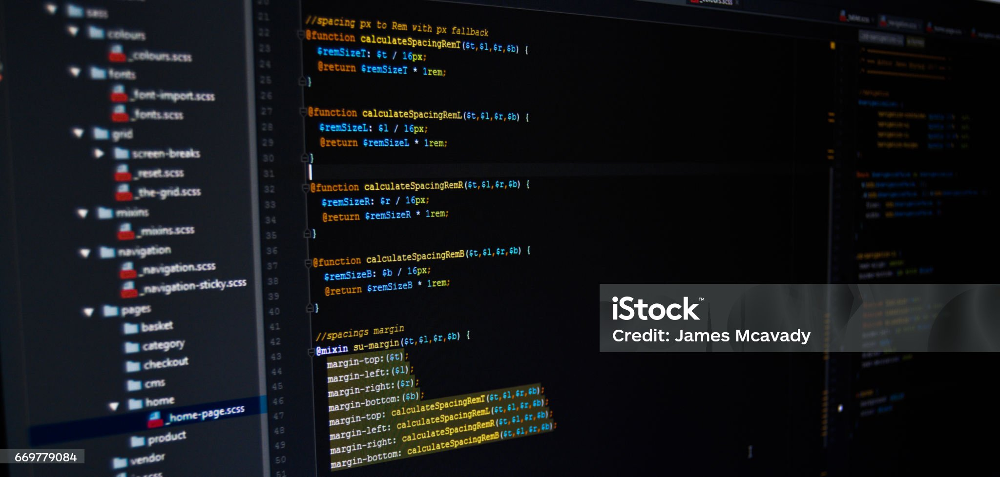

Angular Admin Dashboard
A responsive admin dashboard built with Angular, TailwindCSS, and Firebase for real-time data visualization.

Personal Portfolio
A modern portfolio website with dark mode, animations, and dynamic project showcase using Angular.
Attendance Tracking System
A daily attendance system built with Angular 17 and Firebase Realtime Database featuring dynamic logs.

E-Commerce Store
A full-featured online shop built with Angular, Supabase, and Tailwind. Includes product filters, cart, and secure checkout.

Kids Learning Platform
An interactive platform for children with animated lessons, games, and progress tracking — built using Angular and Firebase.